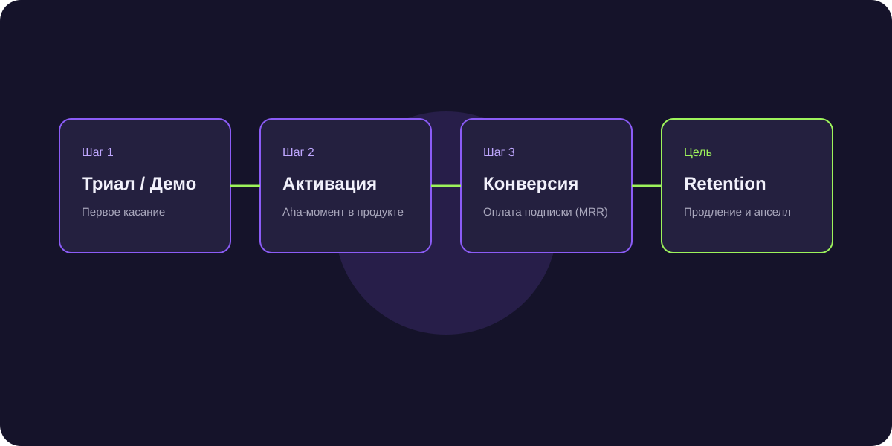

Лидогенерация для партнеров и франчайзи 1С: как продавать крупные внедрения ERP и сопровождение
Продажа коробок 1С дает минимальную маржу. Основную прибыль интеграторы получают с проектных внедрений 1C:ERP, кастомных доработок и регулярного абонентского сопровождения. Разбираем воронку проектных продаж.

Короткий ответ
Лидогенерация для интеграторов 1С строится на продаже предварительного обследования (аудита бизнес-процессов) предприятия. Точки входа: переход с устаревших версий (1С:УПП, 1С:7.7), импортозамещение зарубежных систем (SAP, Oracle, Microsoft Dynamics) и решение проблемы медленной работы базы данных при росте числа пользователей.
3 сегмента высокомаржинальных клиентов для интегратора 1С
- Производственные холдинги (проектный чек от 3 до 20 млн ₽): внедрение комплексной 1С:ERP, интеграция с производственным оборудованием (MES), учет сырья и себестоимости.
- Торгово-логистические компании (чек 1–5 млн ₽): внедрение 1С:Управление торговлей, 1С:WMS, интеграция с маркетплейсами и маркировкой.
- Средний бизнес на абонентском обслуживании: регулярная подписка на пакет часов программистов и консультантов (от 100 000 ₽/мес).
Продажа через предпроектное обследование (Discovery Phase)
Никогда не называйте итоговую стоимость внедрения ERP «на глазок». Продавайте недорогой предпроектный аудит за 150 000 – 350 000 ₽: архитекторы компании проводят интервью с топ-менеджментом заказчика и готовят дорожную карту автоматизации с точной сметой.
Скрипт звонка финансовому директору
«Елена, здравствуйте. Знаем, что ваше предприятие работает на УПП, поддержка которой завершается. Мы перевели на 1C:ERP 14 производственных заводов без остановки отгрузок и кассовых разрывов. Готовы показать живой кейс и разобрать типичные риски миграции на 30-минутной онлайн-встрече с нашим ведущим архитектором».
Частые вопросы по теме
Как выделиться на фоне тысяч других франчайзи 1С?
Узкой отраслевой специализацией: позиционируйтесь не как «мы внедряем всё», а как «эксперты по автоматизации мясоперерабатывающих производств» или «лидеры внедрения 1С:WMS на фармацевтических складах».
Какая норма маржинальности на проектных работах 1С?
Валовая маржинальность часа работы программиста/аналитика составляет от 45% до 65% с учетом фонда оплаты труда.
Закрытие 5 комплексных проектов внедрения ERP на сумму 44 млн ₽
Адресный аутрич предприятий региона, использующих старую 1С:УПП, с предложением аудита рисков завершения поддержки обеспечил загрузку проектного отдела на год вперед.